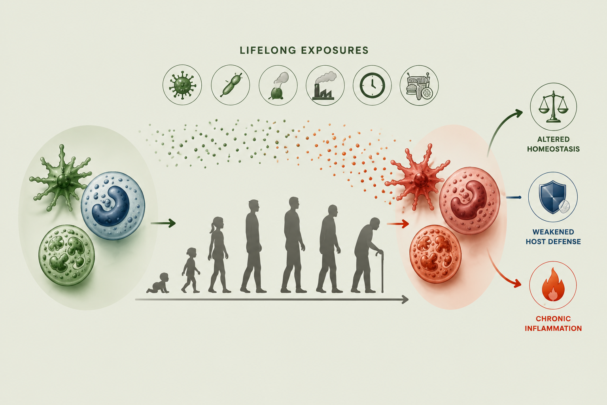
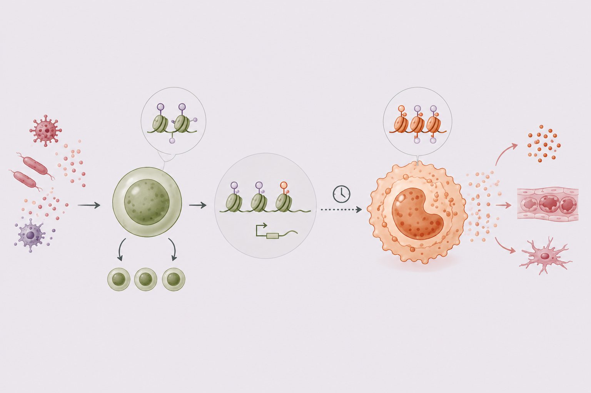
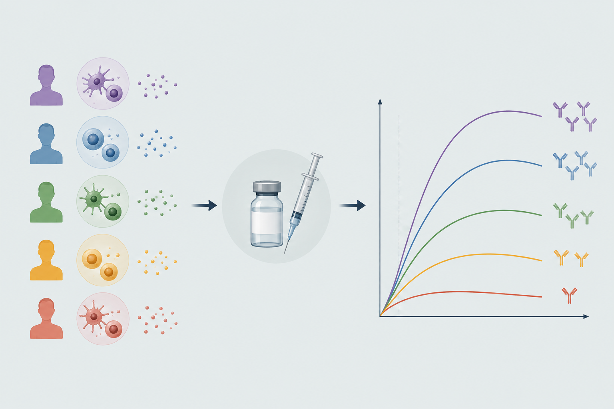

Understanding how past experiences shape
the future of our immune system.
Our immune system is shaped by experiences accumulated over the lifespan—from infections and vaccinations to inflammation. We study how these experiences leave lasting cellular and molecular imprints that alter the immune state and future responses. We combine systems immunology, single-cell multiomics, and experimental models to uncover these mechanisms.
From chromatin and transcriptional programs inside individual cells to immune responses across tissues and people.
01

INNATE IMMUNE AGING
How does aging reshape innate immune cells?
We investigate age-associated changes in monocytes, dendritic cells, and hematopoietic progenitors, with particular focus on inflammatory and epigenetic programs.
02

CUMULATIVE INFLAMMATORY MEMORY
How does a lifetime of inflammatory exposures reprogram innate immunity?
We study how repeated inflammatory exposures reprogram innate immune cells and their progenitors, resulting in durably altered baseline immune states.
03

ALTERED VACCINE IMMUNITY
How do altered baseline immune states affect vaccine responses?
We study how alterations in innate immunity during aging affect vaccine responses and shape the magnitude and quality of protective immunity.
OUR APPROACH
Connecting molecular mechanisms to human immunity.
Our work integrates high-dimensional human systems immunology with perturbation and functional studies, allowing us to move between discovery to mechanism and biological significance, and ultimately towards strategies that improve immune function.
1.Observe in humansHuman cohorts · Systems immunology · Immune profiling
Systems biological assessment of immunity to mild versus severe COVID-19 infection in humans
Science · 2020
Systems-level profiling revealed distinct immune programs associated with mild and severe COVID-19, linking dysregulated innate immune responses with disease severity.